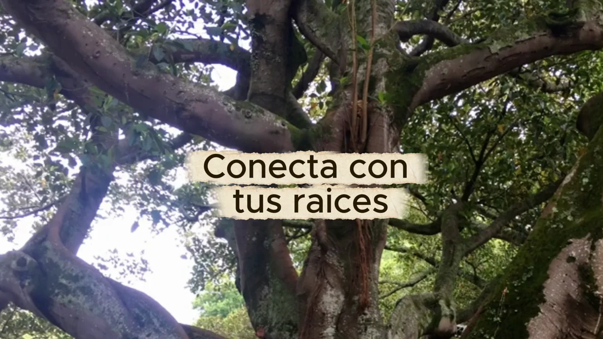

Conecta con tus raíces: meditación bailada
Una meditación bailada de Alejandra Salama para conectarte con la tierra. Escucha gratis el audio completo de 11 minutos.

Escucha la práctica completa
Audio de Alejandra Salama Monsalve · 11 min 1 s
Un momento para ti
Una meditación bailada para conectarte con la tierra. El movimiento y la escucha acompañan esta propuesta de volver a tus raíces.
Busca un momento y un lugar donde puedas escuchar con comodidad. El reproductor te permite pausar, avanzar y volver a empezar.
Conoce el camino de Alejandra y descubre todas las meditaciones y prácticas gratuitas.
Prepara tu espacio
Busca espacio para moverte con comodidad y retira lo que pueda estorbar. No hace falta bailar de una manera determinada: adapta cada movimiento a cómo te encuentras hoy, incluso si prefieres permanecer sentada.
Una pregunta para después
Al terminar puedes escribir: «¿Qué me ayuda a sentir que tengo un lugar al que volver?». No busques una gran respuesta. Puede ser una persona, una rutina, un rincón de casa o un momento sencillo.
Si quieres continuar, prueba estas preguntas para conocerte mejor a través de la escritura.